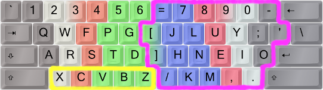

THE ANGLE/WIDE ERGONOMIC KEYBOARD MODEL MODS
Bigger On The Inside
It has been noted that these mods can really open up, say, a cramped notebook keyboard so much that it feels "bigger on the inside"! So maybe this slogan is suitable? ;-)
Typing Advancement: Row Displacement Increases Spaciousness (T.A.R.D.I.S.)
(Technically speaking these mods mostly displace half-rows, but bear with me.)
These are ergonomic mods, moving some keys around to achieve straight wrists (the Angle mods), better hand separation and lower right pinky load (the Wide mods). The Angle part is almost a no-brainer to me as it allows the left hand to keep a straight wrist without changing the fingering on ZXCV, and makes B easier to reach. Colemak creator Shai himself has given his blessing to this mod! The Wide mod is more optional, but it does put some load off the right-hand pinky, widen the arm distance (useful particularly for small keyboards, but nice regardless), and provide easier access to AltGr/Enter/Backspace/RShift – all at a very low learning cost.
- Angle: Keep the left wrist straight on the bottom row! The ring finger still types X and the middle finger C etc.
- Wide: Increase arm separation, relieve the right hand pinky, and make some keys easier to reach.

The AngleWide ergo mod for ISO keyboards. Each image color corresponds to a finger.
With a 102/105-key ISO keyboard the Angle mod is very smooth indeed, and I strongly recommend at least an Angle shift if you have an ISO keyboard! The US/ANSI solution is usually to move the Z to the middle which is a bit more dramatic but still very beneficial:

An ANSI keyboard with finger coloring for the traditional, unergonomic way.
Keys moved by the Angle (yellow) and Wide (purple) mods are circled. Arrows show the main key shift directions.

With the ANSI-Angle(Z)Wide ergo mod applied, the left wrist can be held straight and the right hand pinky gets a lighter workload.
When I use these mods I like to move the key caps around and make the change global - my family actually don't seem to mind as the changes are fairly intuitive and unintrusive, leastways for the run-of-the-mill keyboard user who looks at symbol key caps to find them. I got used to the changes quickly, too. But on laptops I usually don't move anything around and you can implement the change on a per-user basis if you wish. (If you do, take care with your logon dialogs and passwords!)
Stevep99's Ergonomic Keyboard Mods page lists the above mods and more.
"There is another." Actually, there are a couple of other possibilities for ANSI boards, since they don't have a near-perfect solution like the ISO crowd. These are less common but some prefer them. I call them "A-Wing" and "FatZ". And then, there's the insidious "Angle Cheat" too...:
More Angle Mods:
Again, this is the most common Angle/Wide mod for an ANSI/PC104 keyboard:

The ANSI-Angle(Z)Wide(Qu) ergo mod.
One alternative for a straight left wrist is the A-Wing mod which has a cool name but little usage: Split the bottom row while shifting all the others to the right. With A-Wing, you won't get the "wide" experience, and must live with an increased distance to Tab and LShift. In comparison, hitting LShift when using Angle(Z) and straight wrists is actually rather nice!

The ANSI "A-Wing" ergo mod.
I haven't implemented the Fat-Z ANSI Angle mod anywhere, but I will mention it here. The trick is moving Z to the LShift key! LShift then needs a new home which should be better than the old B position. One solution is to move LShift to the Alt key and put Alt on the old B key. But this means moving modifiers around, so I'm a bit wary of it. Also, a fat Z key looks a bit odd, but if it works for you then all's fine!
If you go DoubleFatWide and do the same with RShift and Slash, you'll get a Wide mod with better Slash key placement too. Fat-Z and its fatter cousin DoubleFat may be the best solution for people who use thumb Shift or other
ways of shifting!?
One possibility tried out by BenDover178 is to make LShift a dual-function key that produces Z on tap and LShift when held. This precludes Sticky Shift, but that may not be a hurdle for many. This trick is hard to implement
unless you're using TMK/QMK controllers. See the Modifier Modness section below.

The "DoubleFatWide" ergo mod for ANSI keyboards; shown with the DH mod and some extras.
The above image shows a DoubleFatWide-modded ANSI board, inspired by BenDover. It also has some interesting (and optional!) extras:
-
The Colemak-DH mod (see below), affecting the DBG(V) and HM letters
-
The middle parentheses can be exchanged for pretty much anything. If you need locale letters/accents for instance, they're good for those.
-
Double-function Shift keys, working both as letters and modifiers (see the Modifier Modness section)
-
Fat Apostrophe, forcing Enter upward. If you use Extend-Enter and/or don't mind, this is no problem. Could also swap it with semicolon if desired.
-
\ and - swapped for easier access to hyphen-minus; this is kinda nice. If you like, you could put the backslash on the middle number row position too.
"Angle-Cheat":The least technically intrusive but probably not the smartest way of ensuring a straight left wrist is a trick I've seen many typists do intuitively: Simply change the ZXC fingering so that the index finger hits C and so on. This is what many of the fastest QWERTY and Colemak speed typists have been using, so you can certainly type fast with it! And it'll be available for both Colemak and QWERTY without any tweaks. On the downside, this trick does nothing to improve the B position, it swaps the SC/CS same-finger bigram for the more common CT/TC one (which I consider A Bad Thing™) and it doesn't enable Colemak-DH (see below). Colemak speed record holder Viper used to Angle-Cheat but now he prefers a proper Angle mod – in fact, he uses the whole CAWS mod battery like me!
Backdrop:
For some more background...
Ergo mod background info:
See for instance this topic by cevgar on Wide mods, and this topic by me on Angle mods.
Other names:
Many of these mods have been discussed under other names. So if you come across older posts here's a key to what we've been discussing:
-
AngleWide is often abbreviated as AWide, and Curl(DH)AngleWideSym as CAWS.
-
The Colemak-DH Curl mods have somewhat arcane longer names (DH=DHm=DvbgHm, DHk=DvbgHmk and DvH=DbgHk) which describe and distinguish them.
-
I've named Wide mods after which key they put in the old Right Bracket position; as such, the one I use is AWide(/), AWide-Slash or Awide(35) mod. • The A-Wing angle mod has been called Angle-Frame, A-Frame or AngleWing.
-
I don't know any snappy names for the Fat-Z mod. Then again, Fat-Z is more than cool enough already. ;-)
6s and 7s With U Some Wide mods have the = key between 5 and 6 whereas mine has it between 6 and 7. Most split keyboards with standard row-staggered geometry follow my way and others – particularly matrix boards – have 6 on the right hand. The 6-on-right variant is a priori more symmetric with five number keys on each hand, but on a normal-staggered board mine has 6 on the shortest and = on the longest stretch from the home position which is as it should be. Efficiency before aesthetics. ;-)
There has also been discussion about which key should be on the "Left Bracket key" upper-right position: On ANSI boards it pretty much has to be the apostrophe but on ISO boards another fairly common key should get the honor. I prefer the forward slash in the Wide-ISO mod, as both slash and question mark are relatively common symbols. In my Symbol key mod (see below) I put the even more common hyphen-minus there which feels very good.
COLEMAK-DH ALIAS THE CURL ERGO MOD
The point of the Colemak-DH ergo mod is to make the home row curl like a relaxed hand does instead of forcing it to a straight line as was commonly thought best some years ago. Several typists have felt that the middle-trench D and H positions of Colemak weren't so comfortable and as a result the Workman and Norman and other layouts were made. However, they lose to Colemak on several other important performance statistics (more keys moved, and/or more same-finger bigrams, and/or poorer performance on other stats). So the proposal by stevep99 in 2014 to fix the issue based on Colemak and without any letters changing fingers was a stroke of genius! It's a low-cost improvement of the default straight-homerow Colemak. And I still think of it as Colemak because it really is, keeping its good stats for travel distances, finger usage and same-finger ratios.

The Colemak-Curl(DH)-AngleWide, a.k.a. Colemak-CAW, ergo modded layout. Each image color corresponds to a finger.
The Colemak-DH mod also puts the G key back to its old QWERTY position which more than offsets moving the less frequently used B. On the right hand side, the M and H keys move compared to standard Colemak. But this investment returns a larger gain, as the common H moves to a better position. One substantial benefit is that the common bi-/trigram HE and THE are made better.
If you type a lot in a language in which L is more common than H (including several latin and Nordic languages), it may be worth considering a further tweak in which L is moved down to the better position on the lower row and H gets whatever position you deem second-best. There have also been mod proposals for the Dutch who need a better J position, but it turns out that all the other index finger keys were more important still.
The DH mod for normal row-staggered keyboards depends on using an Angle mod which is easier on an "105-key"/ISO keyboard but there are decent options for "US"/ANSI boards too. If you want to learn this using the Tarmak progression described above, that's possible too! You just have to learn the Angle mod early on, and the 2nd Tarmak step is tweaked a little. The right-hand mod is mostly separate from the rest of the layout from Tarmak1 onwards, but it's okay to do it in the Tarmak1 step.

My personal assessment of key position goodness (from green via blue to purple), using a straight-wrist, relaxed-fingers hand position.
I've dubbed my CurlAngleWide modded Colemak the Colemak-CAW! It's a Colemak at heart, but sufficiently modded that I wanted a snappy name for it. And yes, that's also a tip-of-the-hat to Billy Macaw in CATS. ;-) Also, there have been spiritual developments...:
Colemak ⲔⲰ musings (lighthearted):
COLEMAK ⲔⲰ – THE SOUL OF TYPING!?
Would you believe that in ancient Egyptian Ka means the "soul-body" or life force (while Ba is the "traveling soul" and Akh the "eternal/divine soul"), its hieroglyph being the symbol of... two hands!!! Maybe that's something right there...?
Delving further down the rabbit hole, Wikipedia states that the Coptic word ⲔⲰ (kw) means approximately the same as Egyptian Ka, and this claim is further supported by a book on hieroglyphics I found.
As an added bonus, the latin translation of Ka is ... wait for it ... "genius"!
To make it even stranger, ⲔⲰ would well transliterate to CAW! So maybe Colemak-ⲔⲰ is the new thing then? The life force of ingenious two-handed typing! ^_^

(Easter Egg spoiler: If you're using EPKL try pressing Extend+Home!)
Or, as the great poet Edgar Allan MacCole so famously put it:
CAWed the Raven "Evermore!"
Backdrop: The DH mod has had a few variants in addition to the standard one, which from 2020 is Steve's original DHm mod swapping the Colemak(Angle) D–V–B–G and H–M positions. This variant was selected as the standard since it's good both for standard row-staggered and modern matrix/column-staggered keyboards. My old DvH (DbgHk) mod kept the ZXCV keys together, and the 2017–2020 DHk standard had K on the home row and M in the "pocket" – which most typists agree is just a little better on row-staggered boards but significantly worse on matrix boards. We've tried out all these variants a lot, and arrived at a single strong and flexible DH standard.
See stevep99's Colemakmods page, as well as the main Colemak-DH topic and links therein. Also, note my review of the DH mods and the 2017 DHk standard topic.
PLAYING WITH THE SYMS
The symbol keys weren't touched when Shai designed Colemak, since they're quite rare and mostly not an integral part of the typing flow; they're also a bit different in some locale variants. Semi-/colon was the exception since it sat in a too good position in QWERTY. While I agree that keeping symbols in the standard US layout positions shouldn't affect typing speed or comfort substantially, notice that some keys like ' " and - _ are more common than several letters and do figure in normal text flow. Other layout creators like Dvorak have chosen to optimize symbol key positions too, obviously at the cost of more keys moved from their original positions.
For the more enthusiastic layout modders, I've made a symbol key rotation mod that I simply call Sym. It's only implemented in EPKL for Windows so far.

Colemak-CAWS: The Sym symbol rotation together with the CurlAngleWide ergo mods on an ISO board.
Its simplest form is a single swap of the apostrophe/quote and semicolon/colon keys, which I feel makes text entry a bit more natural and comfortable since the apostrophe is an integral part of English text and quite common. Heavy C coders may disagree with it, but even they may appreciate that single and double quotes are common in code as well. The semicolon key is still only one little stretch away from the home position.
The other element brings the hyphen-minus key down from the number row, at the cost of less common keys like the brackets. For Wide modded keyboards, the less common slash/question and the rare backslash/pipe key are demoted. This should be very good for coders too, who use the underscore a lot. Dvorak users know that a better hyphen placement can be nice.
Non-Wide Sym mod; one QU and one MN loop:
QU > SC & MN > LB > PL
-----------------------------
7 8 9 0 = [
j l u y ' - ] Colemak-Sym
h n e i o ; \
k m , . / _____
-----------------------------
ISO WideSym, as added to the Wide-ISO mod:
QU > SC & SL > BS > PL > MN
ANSI WideSym, with semicolon on the BS key:
QU > SC > BS > PL > MN
Optional addition: Swap parentheses and brackets.
() > []
Full CurlAngleWideSym mod on an ANSI board, with ()-[] swap:
----------------------------------------------------
1 2 3 4 5 6 \ 7 8 9 0 =
Q W F P B ( J L U Y ' - ; Cmk-CAWS-ANSI
A R S T G ) M N E I O (w/ parentheses)
X C D V Z / K H , .
----------------------------------------------------
MODIFIER MODNESS (Work-In-Progress)
We've already encountered a modfied modifier above: The Extend key, which is usually the mostly unused CapsLock being put to far better use. In "vanilla" Colemak, this key is modded to a second Backspace. Furthermore, in EPKL the Extend key can be modified by other modifiers to select different Extend layers, and it can be a tap-mod key that produces for instance a Backspace when tapped quickly but Extend when held.
In the Linux world, it's quite common to shuffle around the modifiers a bit. Caps can become Control, Esc or something else for instance.
SteveP99 is a big fan of remapping in particular the Alt keys, since they're thumb keys which can be very ergonomic. He likes to put Extend and/or Shift on those keys. See his Ergonomic Keyboard Mods GitHub page for more info.
A similar idea is swapping both Alt and Shift keys so you can thumb Shift with both thumbs. This should take a load off your pinkies and give the otherwise underused thumbs more to do while allowing very fast and flexible typing.
I'm a little wary of modifier modding myself, as it can be hard to implement reliably across platforms. Sometimes keys don't play well together, possibly because of hardware limitations in the scan matrix of cheaper keyboards and possibly because an OS (or Java/Flash/etc) can get confused when a non-modifier key becomes one. I've had my share of troubles with the Extend-modifier keys (Ext+A/S/T for Alt/Shift/Ctrl). I'd recommend using Registry remapping or a "hacked" MSKLC layout for Windows to make the remapping work at a sufficiently low level, and similarly edit the keycodes for Linux XKB (e.g., swap the numbers for '<LFSH> = 50;' and '<LALT> = 64;').
Another issue is the differences between keyboards when it comes to the position of particularly the Right Alt key, making it very convenient on some boards but not on others. I do believe you should use a keyboard with a good RAlt position. Note that the Wide mod helps a bit with that.
Another modifier mod is Sticky Shift. With this mod, which is available out-of-the-box in many OSes, you can tap a Shift (or Ctrl) key and then another key to released a shifted (or control) character. It's used by some of the fastest typists because with a chording Shift there's a higher risk of getting DOuble CApitals at high speeds. I find it quite pleasant to use. EPKL supports setting one or more modifiers as sticky. If you move the Shift keys to thumb keys as described above, Sticky Shift should still be useful.
As briefly mentioned above, Dual-function keys is another interesting possibility. I've implemented it for TMK/QMK and EPKL. The idea is that a tap produces one key press, typically a letter, but holding down the key makes it a modifier instead. This may be a little confusing but also quite useful! Keys like Enter and Esc that don't need to be repeated are best for this, since the tapped key won't be able to repeat this way.